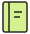

WHO I AM
#001- NAME
- 김민주
- HANDLE
- minnnjuuu
- SCHOOL
- 서울시립대 컴퓨터과학부
- FOCUS
- Web · Bug bounty
CTF · AI
minnnjuuuKEEP LEARNING
KEEP BUILDING
KEEP BUILDING

minnnjuuuminnnjuuu.github.ioKIM MINJU / SECURITY & DEVELOPMENT
김민주의 성장기록장
웹 보안을 탐구하고, 아이디어를 코드로 만듭니다.
배운 것과 만든 것, 그 사이의 시행착오를 기록합니다.
Keep learning, keep growing.
Bootcamp 2기 우수수료
교육서울시립대학교 인공지능혁신융합대학
서포터즈
2024, 2025 소모임장
2026 운영진
한국인터넷진흥원(KISA)이 운영하는
정보보안 인재 양성 교육
06 / NEXT PAGE
프로젝트, 보안, 그리고 새로운 아이디어 이야기.